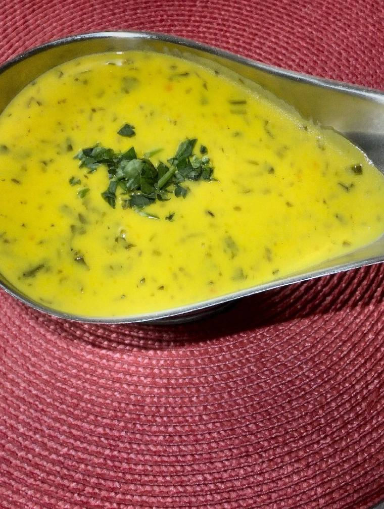

Sauces

Sauces
Sauce béarnaise
Préparation : 15 min
Cuisson : 15 min
Ingrédients (pour 4 personnes)
- 2 jaunes d’œufs
- 80 g de beurre
- 20 g d’échalote
- 4 g d’estragon
- 12 g de vinaigre blanc ou d’estragon
- 12 g de vin blanc
- 1 cuillère à soupe d’eau
- cerfeuil, sel, poivre
Quantités adaptées. Les temps de cuisson ne sont pas recalculés.
- Réduire presque à sec échalote, moitié de l’estragon, vinaigre, vin et poivre.
- Laisser tiédir, ajouter eau et jaunes, fouetter à feu très doux jusqu’à un sabayon épais, sans dépasser 80 °C.
- Hors du feu, incorporer le beurre peu à peu.
- Saler, ajouter le reste d’estragon et le cerfeuil, servir aussitôt.
À consommer aussitôt, ne pas conserver
Jeter ce qui reste, ne pas réchauffer.
AstuceAvec un peu de tomate réduite elle devient Choron, avec de la menthe paloise.
D’après une fiche de chef Robot-Coupe. Ramené d’un litre à quatre personnes, méthode au fouet.